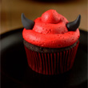

Recipes
Lussekatt or Saffron bun
I don't know why they're called lussekatt, there's not a single cat in there.
I don't know why they're called lussekatt, there's not a single cat in there.

Jansson's frestelse
The hardest ingredient to find for this recipe was someone named Jansson but after searching for a while I finally found one.
The hardest ingredient to find for this recipe was someone named Jansson but after searching for a while I finally found one.

Devil's cupcake
It's me! Well me if i was a cupcake. Didn't have red color for the buttercream so I took the second best thing. It tastes a bit metallic...
It's me! Well me if i was a cupcake. Didn't have red color for the buttercream so I took the second best thing. It tastes a bit metallic...

Meatballs
It's just balls of meat
It's just balls of meat